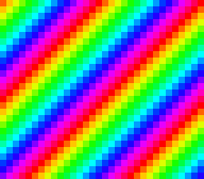

|
OpenSNES
Modern Open-Source SNES Development SDK
|
|
OpenSNES
Modern Open-Source SNES Development SDK
|
Family 6 (Colour & effects) · rung 6b — palette cycling.
Flowing water, bubbling lava, crackling fire, a shimmering "loading" bar, chasing marquee lights — the SNES draws all of these without redrawing a single pixel or spending any VRAM bandwidth. You rotate a handful of palette entries and the hardware does the rest. It is the cheapest animation on the machine, and once you see it you will spot it in half the games you grew up with.

The single new idea: CGRAM is a live lookup table. Rewrite one colour entry during VBlank and every pixel that indexes it changes colour on the very next frame — no tiles touched, no map redrawn. This rung rests on what you already know: solid tiles, a tilemap, and dmaCopyCGram() from earlier colour rungs.
The scene is built procedurally (zero assets): 16 solid 4bpp tiles — tile i is a flat fill of palette index i — and a tilemap laid out as tile = (row + col) & 15 so the colour index runs along each diagonal. A 16-colour rainbow is generated at init and kept as a RAM master copy; every fourth frame it is rotated by one slot and pushed back to CGRAM. Because the rainbow closes the loop (entry 15 flows into entry 0), the cycle is seamless.
Probe oracle: cycle_pos counts every rotation (advances while running, frozen after a START toggle); cycling is the on/off flag.
console, dma, background, input
← previous: transparency · colour math blending · → next in family: direct_color · the pixel byte is the colour